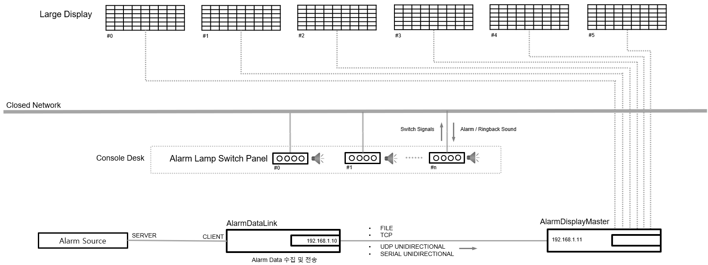

UNIANN™
Universal Alarm Annunciator
UNIANN™ Alarm Annunciator
UNIANN-D2601
대형 디스플레이 / Video Wall Display 알람 경보창 시스템
Overview
UNIANN-D2601 모델은 UNIANN™ 시리즈 중 관제실 또는 제어실의 대형 디스플레이 및 Video Wall Display용 알람 경보창 시스템입니다.
일반적으로 대형 디스플레이를 제어실 벽면에 매립형으로 조합하여 설치하며, 조작부(Switch Panel)는 제어 콘솔 데스크에 별도로 구성됩니다.
이를 통해 원거리에서도 뛰어난 가시성을 확보하면서, 운전자의 조작 편의성과 효율적인 경보 관리를 동시에 제공합니다.
Advantage
- 경보 변경 시 별도의 경보창 공사 불필요 - 경보 조건 변경이나 추가 시에도 구조 변경 없이 유연하게 대응할 수 있습니다.
- 유연한 경보 램프 구성 및 명칭, 크기 변경 - 램프 색상, 명칭, 크기 등을 현장 요구사항에 맞게 손쉽게 조정할 수 있습니다.
- 높은 경보 식별성 확보 - 명확한 시각적 표시를 통해 운전자의 즉각적인 상황 인지를 지원합니다.
System Configuration
제품 구성
UNIANN-D2601은 경보 데이터를 수집하는 AlarmDataLink와 경보를 관리하고 대형 화면에 전송하는 AlarmDisplayMaster, 콘솔 데스크에 설치되는 조작 Switch Panel로 구성되어 있습니다.
• Software-
- AlarmDataLink: 제어 설비(DCS/PLC)의 경보 데이터 수집 및 AlarmDisplayMaster에 전송
 - AlarmDisplayMaster: AlarmDataLink로 부터 수신된 경보 신호를 각 대형 화면에 전송
- AlarmDisplayMaster: AlarmDataLink로 부터 수신된 경보 신호를 각 대형 화면에 전송-
- Large Display: 대형 경보 표시 장치
- Switch Panel: 조작 버튼(Silence, Ack, Reset, Test)
구성 예시

Specifications
AlarmDataLink
실행 환경 및 경보 시퀀스
| 분류 | 항목 | 규격 |
|---|---|---|
| 실행 | 운영체제 | Microsoft Windows 10, 11 |
| 다중 실행 | 차단 | |
| Log(Alarm Source) | 1,000line | |
| Log(Alarm Output) | 1,000line | |
| 경보 Sequence | ANSI/ISA S18.1 SEQUENCE R-1-2-9 |
경보 Tag
| 분류 | 항목 | 규격 |
|---|---|---|
| 경보 Tag 설정 | Format | csv format 파일 (ANSI/UTF-8) |
| Tag Name | 200byte | |
| Lamp Name | 50byte | |
| Lamp Color | 6color(Red, Orange, Yellow, Green, Blue, White) |
경보 수집
| 분류 | 항목 | 규격 |
|---|---|---|
| 경보 데이터 수집 | 네트워크 | Ethernet |
| Protocol | MODBUS TCP | |
| Alarm Source 접속 | 실행 시 자동 접속 및 자동 재접속 | |
| 자동 재접속 시도 주기 | 10sec | |
| 수집 가능 Tag 수 | 65,535tag max. | |
| 회당 요청 데이터 수 | 125개/회 max. | |
| 수집 속도 | Alarm Source의 성능에 따라 사용자 설정 |
경보 데이터 출력 전송
| 분류 | 항목 | 규격 |
|---|---|---|
| 공통 | 전송 방식 | FILE, TCP, UDP, SERIAL (복수 선택 가능) |
| 전송 속도 | 경보 데이터 수집 속도에 종속 | |
| FILE | 형식 | Text File |
| 파일 설정 | Path + File name 사용자 설정 | |
| TCP 양방향 통신 | 연결 관계 | AlarmDataLink(Server) ↔ (Client) 데이터 수신측 |
| Protocol | UNIANN TCP Protocol | |
| 최대 접속 | 5client | |
| UDP 물리적 단방향 통신 | 연결 관계 | AlarmDataLink(Client) → (Server) 데이터 수신측 |
| Cable | UNIANN UDP Unidirectional Cable | |
| Protocol | UNIANN Protocol | |
| Error Recovery | UNIANN Error Recovery Algorithm | |
| Error 발생 확률 | ≤ 8.47 x 10-145 | |
| 전송속도 | 10 / 100 / 1000Mbps | |
| 거리 | 1m 이내 권장 | |
| 접속 수 | 최대 2대 (데이터 수신측) | |
| SERIAL 물리적 단방향 통신 | 연결 관계 | AlarmDataLink(Master) → (Slave) 데이터 수신측 | Cable | UNIANN RS232 Unidirectional Cable UNIANN RS422 Unidirectional Cable |
| Protocol | UNIANN Protocol | |
| COM Port | 사용자 설정 | |
| Baudrate | 300 ~ 115200bps | |
| Data-Parity-Stop bit | 8-N-1 | |
| Error Recovery | UNIANN Error Recovery Algorithm | |
| Error 발생 확률 | ≤ 5.89 x 10-97 | |
| 거리 | RS232: 15m / RS422: 1.2km | |
| 접속 수 | 최대 32대(데이터 수신측) |
AlarmDisplayMaster
실행 환경 및 경보 시퀀스
| 분류 | 항목 | 규격 |
|---|---|---|
| 실행 환경 | 운영체제 | Microsoft Windows 10, 11 |
| 다중 실행 | 차단 | |
| 경보 Sequence | ANSI/ISA S18.1 SEQUENCE R-1-2-9 | |
| 실행 | Lamp Color | 6color(Red, Orange, Yellow, Green, Blue, White) |
| 경보 Tag명 길이 | 64byte max. | |
| 경보 램프명 길이 | 50byte max. | |
| Alarm Log 저장 | 1File/day | |
| Alarm Log 저장 여부 설정 | 사용자 설정 |
경보 Tag
| 분류 | 항목 | 규격 |
|---|---|---|
| 경보 Tag 설정 | Format | csv format 파일 (ANSI/UTF-8) |
| Tag Name | 200byte | |
| Lamp Name | 50byte | |
| Lamp Color | 6color(Red, Orange, Yellow, Green, Blue, White) |
경보 데이터 수집
| 분류 | 항목 | 규격 |
|---|---|---|
| 데이터 수집 | 수집 방식 | FILE, TCP, UDP, SERIAL (택1) |
| 수집 속도 | FILE 방식 외 수신 속도에 종속 | |
| FILE | 형식 | Text File |
| 파일 설정 | Path + File name 사용자 설정 | |
| 주기 | 사용자 설정 | |
| TCP 양방향 통신 | 연결 관계 | AlarmDataLink(Server) ↔ (Client)AlarmDisplayMaster |
| Protocol | UNIANN TCP Protocol | |
| 자동 재접속 시도 주기 | 20sec | |
| UDP 물리적 단방향 통신 | 연결 관계 | AlarmDataLink(Client) → (Server)AlarmDisplayMaster |
| Cable | UNIANN UDP Unidirectional Cable | |
| Protocol | UNIANN Protocol | |
| Error Recovery | UNIANN Error Recovery Algorithm | |
| Error 발생 확률 | ≤ 8.47 x 10-145 | |
| 전송속도 | 10 / 100 / 1000Mbps | |
| 거리 | 1m 이내 권장 | |
| SERIAL 물리적 단방향 통신 | 연결 관계 | AlarmDataLink(Master) → (Slave)AlarmDisplayMaster | Cable | UNIANN RS232 Unidirectional Cable UNIANN RS422 Unidirectional Cable |
| Protocol | UNIANN Protocol | |
| COM Port | 사용자 설정 | |
| Baudrate | 300 ~ 115200bps | |
| Data-Parity-Stop bit | 8-N-1 | |
| Error Recovery | UNIANN Error Recovery Algorithm | |
| Error 발생 확률 | ≤ 5.89 x 10-97 | |
| 거리 | RS232: 15m / RS422: 1.2km |
Large Display
* 대형 모니터 규격은 설치 환경과 고객 요구사항을 반영하여 최적 사양으로 적용됩니다.
Switch Panel
| 분류 | 항목 | 규격 |
|---|---|---|
| 입력 | 조작 버튼 | 4button(SILENCE / ACKNOWLEDGE / RESET / TEST) |
| 출력 | 경보음 | 경보발생음, 경보해제음 |